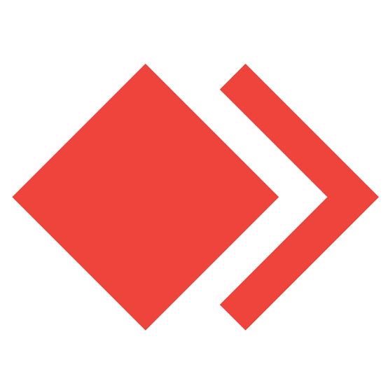

Coloca tu imagen en:
img/anydesk.png
img/anydesk.png
AnyDesk
Software multiplataforma de escritorio remoto conocido por su baja latencia y ligereza. Utiliza un códec de video propio (DeskRT) diseñado específicamente para interfaces gráficas, lo que permite una transmisión fluida incluso en conexiones a Internet con poco ancho de banda. Funciona mediante un identificador numérico único de 9 dígitos.